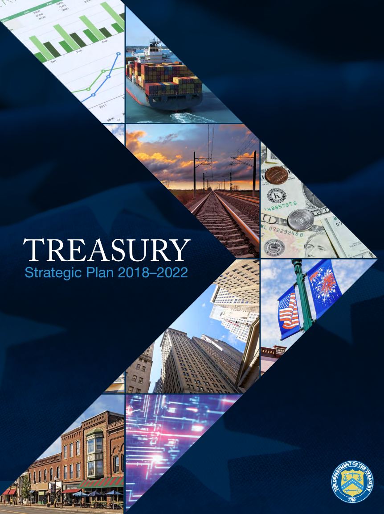
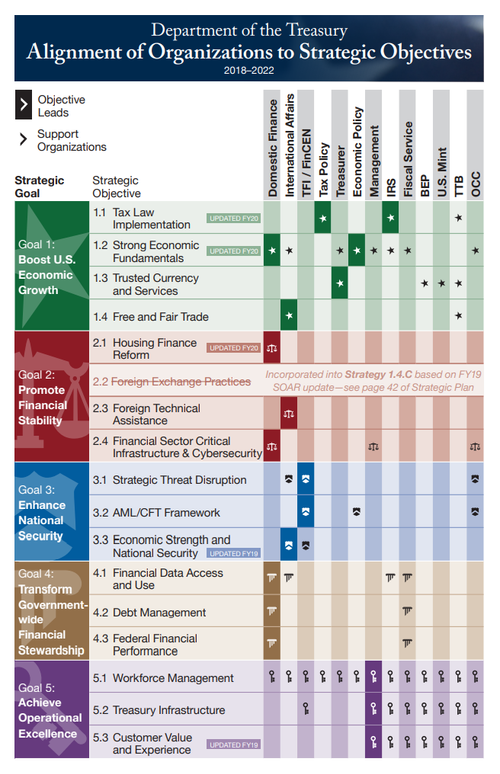
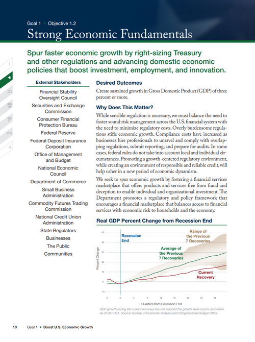
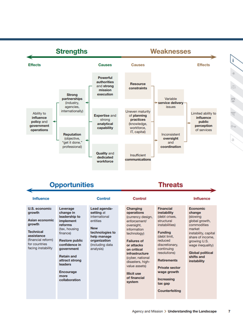

Agency Strategic Plan
Treasury’s five-year Strategic Plan, which covers the entire 88,000-person agency, was not a useful tool for its 88,000 civil servants. We re-designed everything about the Plan — including the strategic objectives it defined, the communications plan, and the printed report — to put its audience first. The award-winning “workbook” approach reached many more people and helped the entire agency.

The Goal
Transform the Strategic Plan into a tool that met the needs of Treasury’s people — to learn about the strategic goals of the organization, to make the connection between themselves and the broader organization, and to make decisions that aligned to the organization’s overall strategy. Design thinking was used throughout the process to make the results far more useful and engaging than previous plans.
Feedback
As part of the planning process, the Core Team conducted dozens of interviews across many disciplines and a comprehensive environmental scan of Treasury’s environment. The resulting SWOT analysis was incorporated into the plan, and that feedback played a critical role in developing goals and strategic objectives. The Plan, the communications plan, and supporting materials all went through several rounds of feedback — often changing significantly based on stakeholder input.
Inside the workbook


